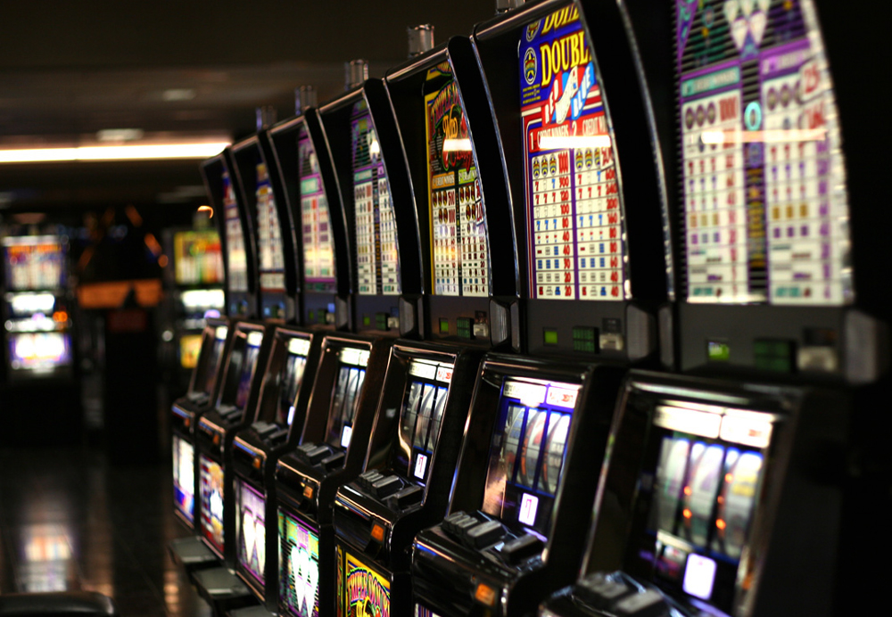

Istoric
Sloturile video moderne fidelizează mii de jucători zilnic, în lumea întreagă și sunt unele dintre jocurile preferate, indiferent că vorbim de cazinouri tradiționale sau de cele online. În ziua de astăzi sunt sute de exemplare, care diferă prin simboluri și teme și ne este din ce în ce mai greu să alegem între mistere, vedetele noastre favorite sau jackpot-urile uriașe. Dar toate astea au plecat de undeva, cineva trebuie să se facă vinovat de toată adrenalina asta! Haideți să vedem cum a arătat primul aparat de păcănele din istorie!
Odată cu schimbarea legilor în America 1919, jocurile de noroc și consumul de alcool au fost interzise, iar toate aparatele de slot au fost mutatate în faimoasele “speakeasies” – locații ilegale. Din moment ce funcționau ilegal, administratorii acestor locații au reintrodus plățile cu bani, crescând și mai mult popularitatea jocurilor. Legalizarea jocurilor de noroc în Nevada 1931 a avut ca rezultat renașterea companiilor dezvoltatoare de jocuri, unde mulți operatori din această industrie au profitat de situatie și au reînceput fabricarea jocului.
La fel ca și în istoria blackjack-lui, originea aparatului de slot nu este foarte clară, majoritatea căzând de acord că primul aparat de poker, dezvoltat de către compania americană Sitman and Pitt din 1891, este precursorul aparatelor video moderne, din ziua de azi. Aparatul conținea 5 roți, un total de 50 cărți și se baza pe poker, însă nu avea un mecanism de plată automat, jucătorii fiind răsplătiți cu oferte din local, băuturi sau trabucuri. Jocul a devenit popular într-un timp foarte scurt și putea fi găsit în toate localurile și barurile de la acea vreme, tocmai de aceea a și suferit prima modificare. Pentru a crește avantajul casei, un as și un zecar au fost înlăturați, în acest fel șansele de a face un royal flush s-au înjumătățit.
Aparate de sloturi
